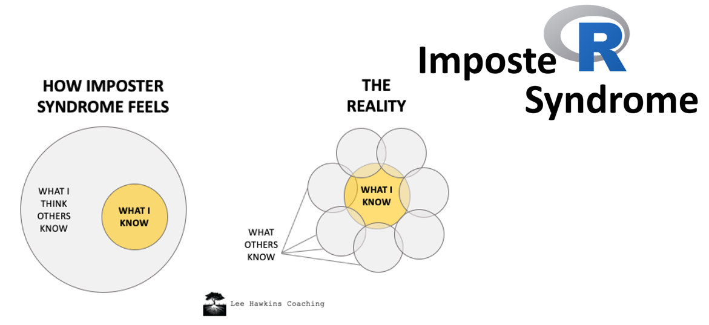
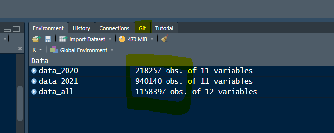
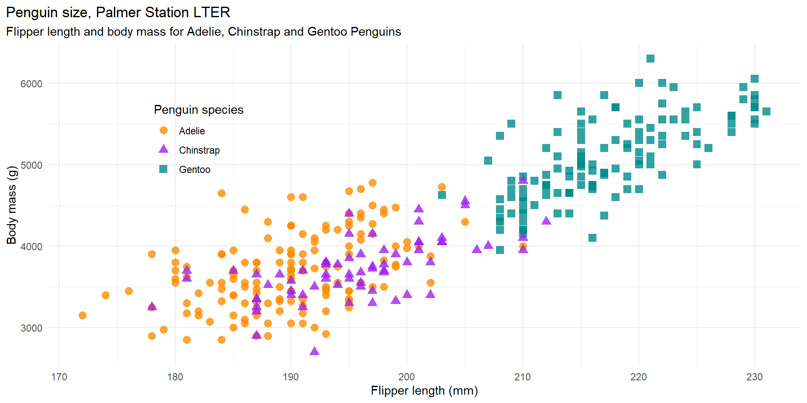
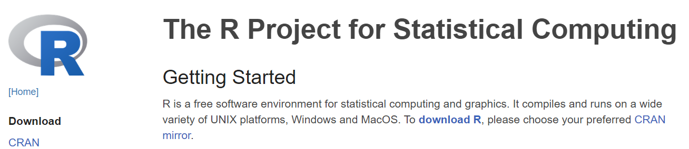
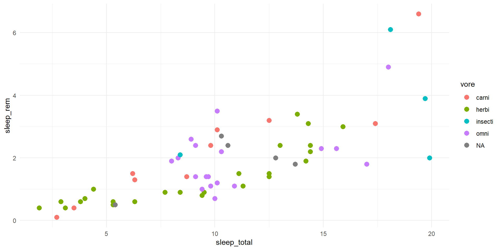
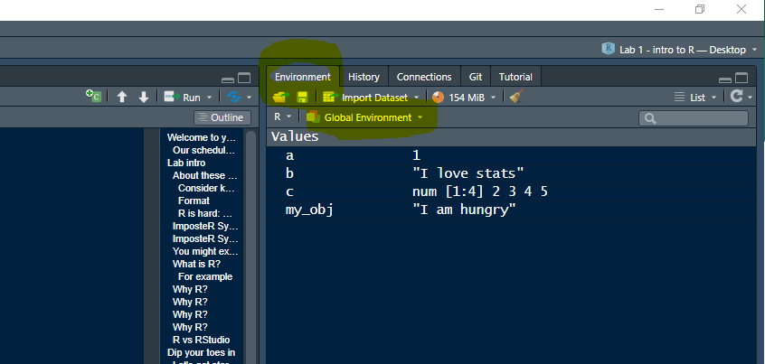

[1] 6786NRES 776 Lab 1
Introduction to R
Sunny Tseng
Welcome to your first R lab!
Our schedule today
Lab intro (10 min)
Intro to R, R studio (20 min)
Gentle intro to programming (60 min)
Quiet time for practice (60 min)
Lab intro
About these labs
Consider keeping your video on
- Food? Pets? Other creatures? We would love to see them!
- Ultimately, you need to be comfortable (and you have the right to privacy)
- Feel free to unmute and ask questions
Format
I will provide you tools and workflow to get started with R
We will have lectures, demonstration, hands-on, and free time
R is hard: But we have no fear
Don’t expect to remember everything
Copy/Paste is your friend
ImposteR Syndrome

ImposteR Syndrome
You might experience this during the course

Artwork by @allison_horst
What is R?
A programming language, a way to give instructions in order to get a computer to do something
We will learn together how to speak the language (i.e., writing the code)
Computers can only read your code, but not your mind
Spelling, punctuation, space, capitalization matter!
For example
R, what is 78 times 87?
Why R?
R is hard
library(seewave)
library(tuneR)
dir <- "E:/Audio/2021_passerine"
dataset <- read_csv(here("Ch1_BirdNET", "data", "2021_MacGillivray's Warbler_working.csv"))
for (i in 101:180) {
site <- dataset$site[i]
recording <- dataset$recording[i]
start_s <- dataset$start_s[i]
end_s <- dataset$end_s[i]
song <- readWave(paste0(dir, "/", site, "/", recording, ".wav"),
from = start_s - 1,
to = end_s + 1,
units = "seconds")
print(paste0("This is recording ", recording, " from ", start_s, " to ", end_s))
play(song, ... = "/play /close")
}Why R?
R is hard - but powerful
When data is beyond your ability to manage in excels
I used R Quarto to make these slides, and R markdown for the course syllabus
Why R?
R is hard - but beautiful
Why R?
R is hard - but reproducible and free!
R vs RStudio
RStudio is not R, RStudio is a Graphic User Interfaces (GUI)
Which means you can code with R without RStudio
But! RStudio makes programming with R easier
And it will make your life easier
Dip your toes in
Let’s get started with RStudio!
Changing options: Tools > Global Options
General > Restore RData into workspace at startup (NO!)
General > Save workspace to on exit (No!)
Appearance > Theme and font size (Personal preference)
Start a project: File > New Project > New Directory > New Project
Name the project as you like (e.g., NRES776_lab_1)
Save the project as you wish (e.g., in your desktop)
You will find a new folder created in the directory that you provided
R project can help handling directories, and organizes your work
Demonstration
Let’s take a look at RStudio
The layout of the windows
Create a project for this lab
Create a new script (New File > R Script)
Save the Script to the project folder
Script (top left)
Console (bottom left)
Global environment (top right)
Files/plots output (bottom right)
Your first R code!
Copy/Paste or type this into the script window in RStudio
Click anywhere on the first line of the code
Run the code
Use the Run button to run single chunk, and repeat this until you ran all the codes
Use
Ctrl-Enterto run single chunk, and repeat this until you ran all the codesHighlight the codes you want to run, and use Run button or
Ctrl-Enter
Your first R code!
Your first R code!
Code (the way you communicate with the computer)
Script (a whole bunch of code)
Output
How are you doing?

Artwork by @allison_horst
R Basics: Objects
Concept of object
Everything in R is an object, or variable. These objects can be almost anything, from a single number to a character string, or a plot, or a dataframe.
- This is an object called a, and its content is 1
- This is an object called b, and its content is “I love stats”
- This is an object called c, and its content is a vector (2,3,4,5)
Creating objects
To create an object we simply give the object a name, and assign it with a value, using assignment operator
<-.
- To create an object, whose name is
my_objand value as"I am hungry":
- To call, or view the content of the object, simply type the object name:
The objects live in your Global Environment
All of the objects you create will be stored and you can view them in RStudio by clicking on the ‘Environment’ tab in the top right window.
The art of naming objects
Naming your objects is one of the most difficult things you will do in R (seriously).
To do
Keep it short and informative
camelCase(e.g., myPlot)snake_case(e.g., my_plot)PascalCase(e.g., MyPlot)

Artwork by @allison_horst
The art of naming objects
Naming your objects is one of the most difficult things you will do in R (seriously).
Not to do
Start with a number (
2my_variable)Start with a dot followed by a number (
.2my_variable)Use non-alphanumeric characters (i.e. &, ^, /, ! etc)
Use space
Name your objects with reserved words (i.e.
TRUE,NA)
One that crops up more times than we can remember is:
R Basic: Operators
Arithmetic operators
To perform common mathematical operations.
Comparison operators
To compare two values, particularly useful when running
ifloop.
Logical operators
To combine conditional statements
Miscellaneous operators
Very useful in manipulating data!
| Operator | Description |
|---|---|
| : | Creates a series of numbers in a sequence |
| %in% | Find out if an element belongs to a vector |
| %*% | Matrix Multiplication |
Q: What do you get by running
"lynx" %in% c("moose", "elk", "deer")?
R Basic: Functions
Functions()
A sequence of code that performs a specific task.

For example:
mean() is a function, and we put c(a, b, c) as its input.
What do functions do?
Do something, return something
e.g., input numbers, output the mean
e.g., input data, output a plot
Do something, return nothing
e.g., input data, save data to a csv file
Functions take arguments to work I
Arguments are input, or options
Such as the x and y in the plot() function
Such as x and na.rm in the mean() function
Can be defined by name or order
With correct position, do not need to specify by name
Functions take arguments to work II
Some are necessary, some are optional
How can I know the arguments of a function?
Take advantage of the help function!
Functions
Package
A collection of functions for a specific task. Once you install/call the package, you can use all the functions inside that package.
dplyr: include functions for data wranglingggplot2: include functions for data visualizationterra: include functions for spatial analysis
To use a package, you need to install and call
Advanced : create your own function I

Advanced : create your own function II
R Basic: Data types
Remember we learned about objects, which can store contents? The contents can be a variety of data types.
Each object has a data type
Common data types
| Type | Example |
|---|---|
numeric |
5, 7.6, 8.3 |
integer |
1, 5, 6, 9 |
character |
“Hi”, “I am tired” |
factor |
“L”, “M”, “H” |
logical |
TRUE or FALSE |
To change the data type of an object, there are also as.character(), as.factor(), as.integer(), etc…
Store data
We usually store data as vectors or dataframs/tibbles
Vector
To create
To check
length(v)How long is the vector?v[2]What’s the second value in the vector?4 %in% vIs 4 an element in the vector?
To add values
c(v, NEW_ELE)Add some new elements
To do math on vectors
Dastaframe/tibble
To create
Import csv file by
read_csv(), excel file byread_xlsx(), or text file byread_delim()- we will learn how to import data in our second lab
Use
tibble()to create one from scratch
Dastaframe/tibble
To create (con’d)
- Use R built in data set such as
iris
Sepal.Length Sepal.Width Petal.Length Petal.Width Species
1 5.1 3.5 1.4 0.2 setosa
2 4.9 3.0 1.4 0.2 setosa
3 4.7 3.2 1.3 0.2 setosa- Use data set that stored in packages, such as
penguinin thepalmerpenguinspackage
# A tibble: 344 x 8
species island bill_length_mm bill_depth_mm flipper_~1 body_~2 sex year
<fct> <fct> <dbl> <dbl> <int> <int> <fct> <int>
1 Adelie Torgersen 39.1 18.7 181 3750 male 2007
2 Adelie Torgersen 39.5 17.4 186 3800 fema~ 2007
3 Adelie Torgersen 40.3 18 195 3250 fema~ 2007
4 Adelie Torgersen NA NA NA NA <NA> 2007
5 Adelie Torgersen 36.7 19.3 193 3450 fema~ 2007
6 Adelie Torgersen 39.3 20.6 190 3650 male 2007
7 Adelie Torgersen 38.9 17.8 181 3625 fema~ 2007
8 Adelie Torgersen 39.2 19.6 195 4675 male 2007
9 Adelie Torgersen 34.1 18.1 193 3475 <NA> 2007
10 Adelie Torgersen 42 20.2 190 4250 <NA> 2007
# ... with 334 more rows, and abbreviated variable names 1: flipper_length_mm,
# 2: body_mass_gDastaframe/tibble
To check
view()How the dataset look like?
head()What is the first few rows (default = 6)?
Sepal.Length Sepal.Width Petal.Length Petal.Width Species
1 5.1 3.5 1.4 0.2 setosa
2 4.9 3.0 1.4 0.2 setosa
3 4.7 3.2 1.3 0.2 setosa
4 4.6 3.1 1.5 0.2 setosa
5 5.0 3.6 1.4 0.2 setosa
6 5.4 3.9 1.7 0.4 setosadim()Dimension of the data set
Dastaframe/tibble
To check (con’d)
colnames()What are the variables measured (column names)?
df[1, ]What is the first row?
df[c(1, 5), ]What are the first and fifth rows?
Dastaframe/tibble
To check (con’d)
df[ , 1],df$col_name, orpull(df, col_name)What is the first column?
df[2, 3]What is the value in the 2nd row and 3rd column?
Dastaframe/tibble
To add rows/columns
bind_row()Add more rowsbind_col()Add more columns
Dastaframe/tibble
To sample (randomly select some rows)
slice_sample()
Sepal.Length Sepal.Width Petal.Length Petal.Width Species
1 6.4 3.2 5.3 2.3 virginica
2 6.4 2.9 4.3 1.3 versicolor
3 5.0 3.4 1.5 0.2 setosa
4 5.8 2.7 4.1 1.0 versicolor
5 4.3 3.0 1.1 0.1 setosa
6 5.8 2.8 5.1 2.4 virginica Sepal.Length Sepal.Width Petal.Length Petal.Width Species
1 5.1 3.8 1.6 0.2 setosa
2 5.4 3.7 1.5 0.2 setosa
3 5.0 3.6 1.4 0.2 setosa
4 5.1 3.3 1.7 0.5 setosa
5 4.4 3.2 1.3 0.2 setosa
6 5.5 4.2 1.4 0.2 setosaDastaframe/tibble
Descriptive statistics of data
- Pull the column that you are interested
- Calculate the statistics
[1] 3.758[1] 1.765298 Sepal.Length Sepal.Width Petal.Length Petal.Width
Sepal.Length 1.0000000 -0.1175698 0.8717538 0.8179411
Sepal.Width -0.1175698 1.0000000 -0.4284401 -0.3661259
Petal.Length 0.8717538 -0.4284401 1.0000000 0.9628654
Petal.Width 0.8179411 -0.3661259 0.9628654 1.0000000R Others: Miscellaneous
Here is some advanced materials if you are comfortable and familiar with the content above
Improving code readability
Space
Line breaks
Lab assignment
Your task I
- Call two packages
palmerpenguinsandtidyverse - Take a look at the dataframe
penguinCheck the dimension, how many penguins are there, what kind of measurements?
What are the measurements of the first penguin?
What are all the
flipper_length_mmmeasurements?
Your task II
- Create a subset of data
penguin_sub, with 60 individuals random sampled frompenguin - Find the mean and standard deviation of the flipper length, using
penguin_sub - Save these two values as
flipper_length_meanandflipper_length_sd - (Bonus) Instead of simple random sampling, use stratified sampling based on penguin species to select 60 penguins (20 penguins each speceis). Calculate the mean and standard deviation of the flipper length based on this new sample.
Hints
- use
install.packages()andlibrary() penguinis an object that stores a tibble, usedim()andview()- use
slice_sample() - use
mean()andsd() - use
<- - use
slice_sample(), check the function arguments
Submission
Due next Wednesday 23:59 pm, Moodle
Evaluation
File format (names.R) (40%)
Accuracy of the code (10%, 10%, 10%, 20%, 10%)
Bonus points for extra question, readable code, efficient programming (30%)
Use of ChatGPT, stackflow, or…
Copy/Paste is your friend! (and never apologize for it!) 😍
But be sure you understand why the codes are doing what they are doing 🧑🎓
So that you form some new neuron connections in the brain 🧠
Quiet/Noisy room

Artwork by @allison_horst
Wrap up
Before we meet again
Have a nice food intake
Have a nap
Have a good break
Next time
- Will see you in 1.5 hours on zoom!